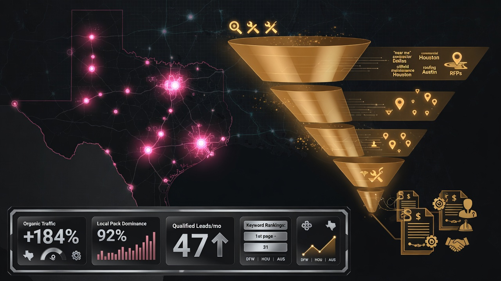

In this article
B2B local SEO is not B2C local SEO with a different logo
Texas industrial, contracting, and professional services firms lose leads when agencies apply consumer playbooks. Restaurant tactics do not rank machine shops in Irving or commercial contractors in Houston. B2B buyers use different keywords, longer consideration cycles, and higher scrutiny before first contact.
This guide outlines TSBR strategies for winning high-value Texas buyers through local search, Google Business Profile dominance, and AI-ready content architecture.
Target commercial keyword intent
Map keywords to buying stages. Prioritize terms with quote intent: commercial HVAC contractor Katy, industrial pump supplier San Antonio, civil engineering firm Round Rock. Deprioritize purely informational queries that attract students and DIY researchers.
Use sales team interviews to capture language from RFQs and discovery calls. That language becomes service descriptions, GMB posts, and page titles.
Multi-location Texas strategy
Companies serving DFW and Houston need market-specific pages, citations, and GMB service areas. One generic Texas page cannot rank everywhere. Build substantive location content with local projects, phone numbers, and team presence.
Prevent cannibalization by assigning keyword clusters per branch and using proper primary listing hierarchy for multi-location brands.
Lead quality over traffic volume
Ten thousand monthly sessions mean nothing if only twelve are quote requests. Measure calls, forms, RFQs, and CRM-opportunity creation. Optimize profiles and pages to filter consumer intent with clear commercial language and B2B proof.
Integrate GMB and website storytelling
Your profile and site must tell the same story: services, cities, certifications, and project proof. Cross-link services to location pages. Showcase case studies that mirror review themes on Google.
Citations and NAP for B2B entities
Industry directories matter for B2B: Thomasnet, industry associations, BBB, regional chambers. Consistent NAP across seventy plus sources corroborates your entity for Maps and AI.
Content silos that close deals
Build silos for services, industries, locations, and resources. Internal linking distributes authority. Answer buyer objections: timelines, bonding, insurance, fleet size, emergency response, geographic limits.
| B2B vertical | High-intent Texas keyword pattern |
|---|---|
| Industrial equipment | commercial [equipment] repair [city] |
| Contracting | commercial [trade] contractor [metro] |
| Engineering | [discipline] engineering firm [city] |
| Distribution | industrial supplier near [city] |
Prepare for AI-mediated shortlists
Procurement teams increasingly use generative tools. Entity strength and FAQ-rich content ensure you appear in AI-generated vendor lists alongside Map Pack visibility.
Metrics that matter
- Map Pack share of voice for commercial keywords
- Qualified leads per month by source
- Review velocity and sentiment
- Location page conversion rate
- Pipeline attributed to organic local search
Texas proof points
Precision Machine Works increased quote requests six hundred twenty percent. Alamo Industrial Supply achieved three point two times RFQs. Patterns repeat when B2B intent, not consumer vanity metrics, drive strategy.
Align SEO with your sales process
Interview estimators and inside sales reps quarterly. Capture phrases from won and lost deals. Lost deals due to discoverability problems indicate keyword gaps. Won deals from Google reveal terms to double down on in GMB services and location pages.
Configure CRM required fields for lead source and first-touch URL. Texas B2B pipelines move slowly; multi-touch attribution still starts with how buyers found you initially.
Vertical-specific tactics
Industrial equipment firms need equipment photos and spec-sheet downloads. Contractors need project galleries and bonding proof. Engineering firms need credentials, PE licenses, and municipal experience lists. Distributors need inventory and fulfillment FAQs. Customize proof modules per vertical instead of generic trust badges.
DFW versus Houston versus Austin nuances
DFW buyers split industrial west versus corporate north. Houston buyers weight storm readiness and energy corridor experience. Austin buyers scrutinize digital polish and technical depth. One statewide keyword list fails. Build metro-specific clusters and review themes.
Reporting cadence for leadership
- Weekly ranking snapshot during launch quarter
- Monthly qualified lead report by source
- Quarterly pipeline attribution review with finance
- Annual competitive share-of-voice benchmark
Twelve-month B2B local SEO roadmap
- Months 1-3: GMB Velocity and citation foundation
- Months 4-6: Location and service content expansion
- Months 7-9: AI schema and FAQ engineering
- Months 10-12: Multi-market defense and new city rollout
Contract and project-based keyword clusters
Group keywords by contract type: TI buildouts, plant shutdowns, municipal infrastructure, OEM maintenance. Each cluster gets a landing path from GMB service to website case study to contact CTA. Buyers searching shutdown maintenance Texas should land on proof-heavy pages, not a generic home page.
Review strategy for long sales cycles
B2B reviews often arrive months after project completion. Build CRM triggers at substantial completion, not invoice only. Ask project managers to request reviews when client satisfaction peaks. Accumulate steady velocity instead of sporadic bursts that look manipulated.
Technical SEO foundations for industrial sites
Many Texas B2B sites run legacy CMS platforms with slow mobile performance. Fix Core Web Vitals on service pages before scaling content. Ensure HTTPS, clean canonicals, and structured breadcrumbs. Technical debt blocks rankings even with perfect GMB.
Partner and supplier ecosystem links
Earn links from manufacturers you represent, general contractors you subcontract for, and industry associations. Local relevance plus industry authority strengthens both Maps and organic B2B rankings.
In-house versus agency execution
Some Texas B2B firms hire internal marketing coordinators who lack local SEO depth. TSBR partners with internal teams: we supply strategy, audits, and specialist execution while your coordinator handles industry relationships and project photos. Hybrid models reduce cost and improve authenticity of content.
Founder access to Mike Kaswatuka prevents strategy drift that happens when agencies hand off to juniors. Your market is too competitive for inexperienced account management.
Defending Map Pack positions year two
Year one wins attract competitor response. Year two requires review maintenance, post consistency, citation monitoring, and expansion into adjacent keywords. Budget for defense, not only initial conquest. Clients who stop at month six lose positions to hungrier competitors.
Budgeting B2B local SEO in Texas metros
Competitive metros require sustained investment across GMB management, citations, content, and technical fixes. Underfunding one layer creates bottlenecks. A San Antonio supplier may move faster with smaller monthly spend than a Houston contractor facing fifty established Map Pack competitors. Benchmark against gap size from your audit, not national averages.
Finance teams should compare cost per qualified lead from local search against bid networks and trade shows. TSBR clients frequently report lower acquisition cost once Map Pack dominance stabilizes in month four through six.
Client onboarding data we request
License numbers, insurance certificates, service area list by city, top twenty revenue services, active project photos, CRM export of lead sources, and access to GMB and analytics. Complete onboarding accelerates Velocity launch within two weeks of contract signature.
Closing perspective
B2B local SEO in Texas rewards specialization. Generic agencies chase traffic. TSBR chases qualified commercial visibility in Maps, organic, and AI surfaces. The playbook is repeatable: audit, fix NAP, launch Velocity, expand content, measure pipeline. Execute with discipline and Texas market nuance.
Work with Mike Kaswatuka

Founder-led strategy is the TSBR difference. Call (682) 206-4178 or email hello@tsbrenterprises.com for a B2B local SEO audit scoped to your Texas metros, industries, and revenue goals.
Implement B2B local SEO with TSBR
Request a free audit covering GMB, citations, competitor Map Packs, and AI visibility. Receive a ninety-day B2B action plan tailored to your Texas markets.